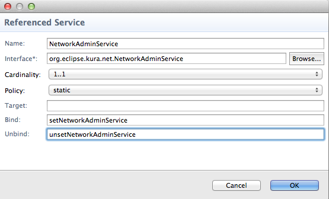

How to manage Network Settings
This section provides an example of how to create a Kura bundle that can be used to configure the network interfaces of your device. In this example, you will learn how to perform the following functions:
-
Create a plugin that configures the network interfaces
-
Connect to a wireless access point
-
Create a wireless access point
As written, the example code configures the device with a static Wi-Fi configuration. Typically, the device settings would be defined through the Kura Gateway Administration Console instead of through Java code.
A more practical application of this example is for IP network interfaces that need to be dynamically modified based on some external trigger or condition, such as geo-fencing. The Kura framework allows the device to be programmatically changed via its APIs based on application-specific logic.
Prerequisites
Setting up the Eclipse Kura Development Environment
Network Configuration with Kura
Hardware Setup
This example requires an embedded device running Kura with at least one Ethernet port and Wi-Fi support.
Additionally, the Connect to an Access Point section requires a wireless access point and the following information about the access point:
-
SSID (Network Name)
-
Security Type (WEP, WPA, or WPA2), if any
-
Password/Passphrase, if any
Lastly, the Create an Access Point section requires:
-
A wireless device, such as a laptop, to test the access point.
-
Optionally, you may connect the Kura device’s Ethernet port to another network and use Kura as a gateway to that network.
Determine Your Network Interfaces
In order to determine your network interfaces, run one of the following commands at a terminal on the embedded gateway:
ifconfig -a or ip link show
Typical network interfaces will appear as follows:
-
lo - loopback interface
-
eth0 - first Ethernet network interface
-
wlan0 - first wireless network interface
-
ppp0 - first point-to-point protocol network interface, which could be a dial-up modem, PPTP VPN connection, cellular modem, etc.
Make note of your wireless interface. For this tutorial, we will assume the wireless interface name is ‘wlan0’.
Kura Networking API
The networking API consists of two basic services: org.eclipse.kura.net.NetworkService and org.eclipse.kura.net.NetworkAdminService.
The NetworkService is used to get the current state of the network. For example, the getNetworkInterfaces() method will return a List of NetInterface objects (such as EthernetInterface or WifiInterface) for each interface. This provides a detailed representation of the current state of that interface, such as its type, whether it is currently up, and its current address, which is returned by the getNetInterfaceAddresses() method as a List of NetInterfaceAddress objects. The NetworkService can also be used to get a list of all the network interface names available on the system, or a list of all the Wi-Fi access points that are currently detected by the system.
The NetworkAdminService is used to get and set the configuration for each interface. Similar to the NetworkService, it has a getNetworkInterfaceConfigs() that returns a List of NetInterfaceConfig objects (such as EthernetInterfaceConfig and WifiInterfaceConfig) for each interface. These have the same methods as a NetInterface object but represent the current configuration for that interface. For a NetInterfaceConfig object, the getNetInterfaceAddress() method will return a List of NetInterfaceAddressConfig objects. These NetInterfaceAddressConfig instances, in turn, contain a List of NetConfig objects that define the configuration for that interface.
There are many types of NetConfig objects, including:
-
NetConfigIP4 - contains the IPv4 address configuration
-
WifiConfig - contains the Wi-Fi configuration. Note that a WifiInterfaceAddressConfig may contain multiple WifiConfigs, since a configuration might exist for one or more Wi-Fi modes. The currently active WifiConfig is the one with a WifiMode that matches the WifiInterfaceAddressConfig WifiMode.
-
DhcpServerConfigIP4 - contains the IPv4-based DHCP server configuration
-
DnsServerConfigIP4 - contains the IPv4-based DNS server configuration
-
FirewallNatConfig - contains the firewall NAT configuration
These NetConfigs can also be used to configure an interface by providing them as a list to the updateEthernetInterfaceConfig(), updateWifiInterfaceConfig(), or updateModemInterfaceConfig() methods in the NetworkAdminService.
Connect to an Access Point
In this section, you will develop a Kura network configuration bundle that sets up the Wi-Fi interface as a client to a wireless access point.
Implement the Bundle
To implement the network configuration bundle, perform the following steps:
Note
For more detailed information about bundle development (i.e., the plug-in project, classes, and MANIFEST file configuration), please refer to the Hello World Application
-
Create a Plug-in Project named
org.eclipse.kura.example.network; set the an OSGi framework option to standard; uncheck the Generate an activator option; and set the Execution Environment variable to match the JVM on your target device. -
Include the following bundles in the MANIFEST.MF:
- org.eclipse.kura
- org.eclipse.kura.net
- org.eclipse.kura.net.dhcp
- org.eclipse.kura.net.firewall
- org.eclipse.kura.net.wifi
- org.osgi.service.component
-
org.slf4j
-
Create a class named NetworkConfigExample in the org.eclipse.kura.example.network project.
-
Create an OSGI-INF folder in the org.eclipse.kura.example.network project. Add a Component Class with the parent folder org.eclipse.kura.example.network/OSGI-INF, Component Name org.eclipse.kura.example.network, and Class org.eclipse.kura.example.network.NetworkConfigExample.
-
Select the Services tab in the component.xml file. Under Referenced Services, add org.eclipse.kura.net.NetworkAdminService. Edit the properties of this service, and configure the Bind property to setNetworkAdminService and Unbind to unsetNetworkAdminService as shown in the following screen capture. These settings are required because of the dependency on NetworkAdminService.

The following source code will also need to be implemented:
-
META-INF/MANIFEST.MF - OSGI manifest that describes the bundle and its dependencies.
-
OSGI-INF/component.xml - declarative services definition describing what services are exposed by and consumed by this bundle.
-
org.eclipse.kura.example.network.NetworkConfigExample.java - main implementation class.
META-INF/MANIFEST.MF File
The META-INF/MANIFEST.MF file should look as follows when complete:
Warning
Whitespace is significant in this file; make sure yours matches this file exactly.
Manifest-Version: 1.0
Bundle-ManifestVersion: 2
Bundle-Name: Network
Bundle-SymbolicName: org.eclipse.kura.example.network
Bundle-Version: 1.0.0.qualifier
Bundle-Vendor: ECLIPSE
Bundle-RequiredExecutionEnvironment: JavaSE-1.7
Import-Package: org.eclipse.kura,
org.eclipse.kura.net,
org.eclipse.kura.net.dhcp,
org.eclipse.kura.net.firewall,
org.eclipse.kura.net.wifi,
org.osgi.service.component;version="1.2.0",
org.slf4j;version="1.6.4"
Service-Component: OSGI-INF/component.xml
OSGI-INF/component.xml File
<?xml version="1.0" encoding="UTF-8"?>
<scr:component xmlns:scr="http://www.osgi.org/xmlns/scr/v1.1.0"
name="org.eclipse.kura.example.network.NetworkConfigExample"
activate="activate"
deactivate="deactivate"
enabled="true"
immediate="true"
configuration-policy="require"
modified="updated">
<implementation class="org.eclipse.kura.example.network.NetworkConfigExample"/>
<service>
<provide interface="org.eclipse.kura.configuration.ConfigurableComponent"/>
</service>
<reference name="NetworkAdminService"
interface="org.eclipse.kura.net.NetworkAdminService"
policy="static"
cardinality="1..1"
bind="setNetworkAdminService"
unbind="unsetNetworkAdminService"/>
<property name="service.pid" type="String" value="org.eclipse.kura.example.network.NetworkConfigExample"/>
</scr:component>
org.eclipse.kura.example.network.NetworkConfigExample.java
package org.eclipse.kura.example.network;
import java.util.ArrayList;
import java.util.List;
import org.osgi.service.component.ComponentContext;
import org.slf4j.Logger;
import org.slf4j.LoggerFactory;
import org.eclipse.kura.KuraException;
import org.eclipse.kura.net.IP4Address;
import org.eclipse.kura.net.IPAddress;
import org.eclipse.kura.net.NetConfig;
import org.eclipse.kura.net.NetConfigIP4;
import org.eclipse.kura.net.NetInterfaceStatus;
import org.eclipse.kura.net.NetworkAdminService;
import org.eclipse.kura.net.dhcp.DhcpServerConfigIP4;
import org.eclipse.kura.net.firewall.FirewallNatConfig;
import org.eclipse.kura.net.wifi.WifiCiphers;
import org.eclipse.kura.net.wifi.WifiConfig;
import org.eclipse.kura.net.wifi.WifiMode;
import org.eclipse.kura.net.wifi.WifiRadioMode;
import org.eclipse.kura.net.wifi.WifiSecurity;
public class NetworkConfigExample {
private static final Logger s_logger = LoggerFactory.getLogger(NetworkConfigExample.class);
private NetworkAdminService m_netAdminService;
// ----------------------------------------------------------------
//
// Dependencies
//
// ----------------------------------------------------------------
public void setNetworkAdminService(NetworkAdminService netAdminService) {
this.m_netAdminService = netAdminService;
}
public void unsetNetworkAdminService(NetworkAdminService netAdminService) {
this.m_netAdminService = null;
}
// ----------------------------------------------------------------
//
// Activation APIs
//
// ----------------------------------------------------------------
protected void activate(ComponentContext componentContext) {
s_logger.info("Activating NetworkConfigExample...");
connectToWirelessAccessPoint();
// createWirelessAccessPoint();
s_logger.info("Activating NetworkConfigExample... Done.");
}
protected void deactivate(ComponentContext componentContext) {
s_logger.info("Deactivating NetworkConfigExample...");
s_logger.info("Deactivating NetworkConfigExample... Done.");
}
// ----------------------------------------------------------------
//
// Private Methods
//
// ----------------------------------------------------------------
/**
* Connect to a wireless access point using the hard-coded parameters below
*/
private void connectToWirelessAccessPoint() {
String interfaceName = "wlan0";
// Create a NetConfigIP4 - configure as a WAN (gateway) interface, and a DHCP client
NetInterfaceStatus netInterfaceStatus = NetInterfaceStatus.netIPv4StatusEnabledWAN;
boolean dhcpClient = true;
boolean autoConnect = true;
NetConfigIP4 netConfigIP4 = new NetConfigIP4(netInterfaceStatus, autoConnect, dhcpClient);
// Create a WifiConfig managed mode client
String driver = "nl80211";
String ssid = "access_point_ssid";
String password = "password";
WifiSecurity security = WifiSecurity.SECURITY_WPA2;
WifiCiphers ciphers = WifiCiphers.CCMP_TKIP;
int[] channels = {1,2,3,4,5,6,7,8,9,10,11};
WifiConfig wifiConfig = new WifiConfig();
wifiConfig.setMode(WifiMode.INFRA);
wifiConfig.setDriver(driver);
wifiConfig.setSSID(ssid);
wifiConfig.setPasskey(password);
wifiConfig.setSecurity(security);
wifiConfig.setChannels(channels);
wifiConfig.setGroupCiphers(ciphers);
wifiConfig.setPairwiseCiphers(ciphers);
// Create a NetConfig List
List<NetConfig> netConfigs = new ArrayList<NetConfig>();
netConfigs.add(netConfigIP4);
netConfigs.add(wifiConfig);
// Configure the interface
try{
s_logger.info("Reconfiguring " + interfaceName + " to connect to " + ssid);
m_netAdminService.disableInterface(interfaceName);
m_netAdminService.updateWifiInterfaceConfig(interfaceName, autoConnect, null, netConfigs);
s_logger.info("Enable " + interfaceName);
m_netAdminService.enableInterface(interfaceName, dhcpClient);
} catch(KuraException e) {
s_logger.error("Error connecting to wireless access point", e);
}
}
/**
* Create a wireless access point
*/
private void createWirelessAccessPoint() {
try{
String interfaceName = "wlan0";
// Create a NetConfigIP4 - configure as a LAN interface with a manual IP address
NetInterfaceStatus netInterfaceStatus = NetInterfaceStatus.netIPv4StatusEnabledLAN;
boolean dhcpClient = false;
boolean autoConnect = true;
IP4Address ipAddress = (IP4Address) IPAddress.parseHostAddress("172.16.10.1");
IP4Address subnetMask = (IP4Address) IPAddress.parseHostAddress("255.255.255.0");
NetConfigIP4 netConfigIP4 = new NetConfigIP4(netInterfaceStatus, autoConnect);
netConfigIP4.setAddress(ipAddress);
netConfigIP4.setSubnetMask(subnetMask);
// Create a WifiConfig access point
String driver = "nl80211";
String ssid = "NetworkConfigExample";
String password = "password";
WifiSecurity security = WifiSecurity.SECURITY_WPA2;
WifiCiphers ciphers = WifiCiphers.CCMP_TKIP;
int[] channels = {1};
WifiRadioMode radioMode = WifiRadioMode.RADIO_MODE_80211g;
String hwMode = "g";
WifiConfig wifiConfig = new WifiConfig();
wifiConfig.setMode(WifiMode.MASTER);
wifiConfig.setDriver(driver);
wifiConfig.setSSID(ssid);
wifiConfig.setPasskey(password);
wifiConfig.setSecurity(security);
wifiConfig.setChannels(channels);
wifiConfig.setGroupCiphers(ciphers);
wifiConfig.setPairwiseCiphers(ciphers);
wifiConfig.setRadioMode(radioMode);
wifiConfig.setHardwareMode(hwMode);
// Create a DhcpServerConfig to enable DHCP server functionality
int defaultLeaseTime = 7200;
int maximumLeaseTime = 7200;
IP4Address routerAddress = ipAddress;
IP4Address rangeStart = (IP4Address) IPAddress.parseHostAddress("172.16.10.100");
IP4Address rangeEnd = (IP4Address) IPAddress.parseHostAddress("172.16.10.200");
IP4Address dhcpSubnetMask = (IP4Address) IPAddress.parseHostAddress("255.255.255.0");
IP4Address subnet = (IP4Address) IPAddress.parseHostAddress("172.16.10.0");
short prefix = 24;
boolean passDns = true;
List<IP4Address> dnsServers = new ArrayList<IP4Address>();
dnsServers.add(ipAddress); // Use our IP as the DNS server
DhcpServerConfigIP4 dhcpServerConfigIP4 = new DhcpServerConfigIP4(
interfaceName, true, subnet, routerAddress, dhcpSubnetMask, defaultLeaseTime,
maximumLeaseTime, prefix, rangeStart, rangeEnd, passDns, dnsServers);
// Create a FirewallNatConfig to enable NAT (network address translation)
// note that the destination interface is determined dynamically
FirewallNatConfig natConfig = new FirewallNatConfig(interfaceName, "tbd", true);
// Create a NetConfig List
List<NetConfig> netConfigs = new ArrayList<NetConfig>();
netConfigs.add(netConfigIP4);
netConfigs.add(wifiConfig);
netConfigs.add(dhcpServerConfigIP4);
netConfigs.add(natConfig);
// Configure the interface
s_logger.info("Reconfiguring " + interfaceName + " as an access point with SSID: " + ssid);
m_netAdminService.disableInterface(interfaceName);
m_netAdminService.updateWifiInterfaceConfig(interfaceName, autoConnect, null, netConfigs);
s_logger.info("Enable " + interfaceName);
m_netAdminService.enableInterface(interfaceName, dhcpClient);
} catch(Exception e) {
s_logger.error("Error configuring as an access point", e);
}
}
}
Modify the parameters in the connectToWirelessAccessPoint() method with the specific values for the access point you want to connect to, including the variables for SSID, password, and security settings:
-
String ssid = "access_point_ssid";
-
String password = "password";
-
WifiSecurity security = WifiSecurity.SECURITY_WPA2;
At this point, the bundle implementation is complete. Make sure to save all files before proceeding.
Export the OSGi bundle as a stand-alone plug-in, following the instructions in Hello World Using the Kura Logger.
Deploy the Bundle
In order to proceed, you need to know the IP address of your embedded gateway that is running Kura. Follow the mToolkit instructions for installing a single bundle to the remote target device located here. Once the bundle has finished deploying, it will set the device’s network configuration and attempt to connect to a Wi-Fi access point using the configured parameters in the connectToWirelessAccessPoint() method.
Test the Connection to the Access Point
To verify that the interface (wlan0) has acquired an IP address, run the ifconfig command at a terminal on the embedded gateway.
To show the current connection status to the access point, run the following commands:
Create an Access Point
This example code can be modified slightly to make the gateway function as an access point instead of connecting to an access point.
To do this, modify the activate() method in the NetworkConfigExample.java file to comment out connectToWirelessAccessPoint() and uncomment createWirelessAccessPoint().
protected void activate(ComponentContext componentContext) {
s_logger.info("Activating NetworkConfigExample...");
// connectToWirelessAccessPoint();
createWirelessAccessPoint();
s_logger.info("Activating NetworkConfigExample... Done.");
}
Modify the access point configuration variables under createWirelessAccessPoint() for your needs, if necessary, such as the variables:
IP4Address ipAddress = (IP4Address) IPAddress.parseHostAddress("172.16.10.1");
IP4Address subnetMask = (IP4Address) IPAddress.parseHostAddress("255.255.255.0");
// Create a WifiConfig access point
String driver = "nl80211";
String ssid = "NetworkConfigExample";
String password = "password";
Export the bundle again as a stand-alone OSGi plug-in and redeploy it to the target device. It should now reconfigure itself to create an access point with an active DHCP server, DNS proxy forwarding, and NAT enabled.
Test the Access Point
To verify that the interface (wlan0) has a fixed IP address, run the ifconfig command at a terminal on the embedded gateway.
To view information on the Wi-Fi access point, including interface name, wireless channel, and MAC address, enter:
iw dev wlan0 info
To monitor connect and disconnect events from the access point, enter:
iw event –f
Use another wireless client, such as a laptop, to verify that you can connect to the access point, that it receives an IP address, and that it can ping the network. When the client connects to the access point, the console should show a new station connection event.
To view station statistic information, including signal strength and bitrate, enter:
iw dev wlan0 station dump
Optionally, if the gateway has another interface configured for WAN with connection to the Internet, then the wireless client should be able to reach the Internet using this access point as its gateway. The setup for the other interface (not covered in this example) would need to be configured in the device using the Kura Gateway Administration Console.